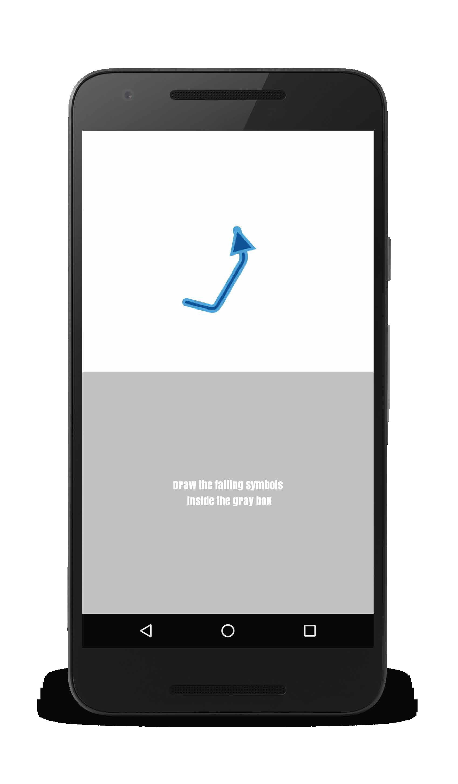

Effect of Orientation on Unistroke Touch Gestures

Authors. Sven Mayer, Valentin Schwind, Huy Viet Le, Dominik Weber, Jonas Vogelsang, Johannes Wolf, Niels Henze
Venue. CHI (2019) Full Paper
Type. Full Paper
Abstract. As touchscreens are the most successful input method of current mobile devices, touch gestures became a widely used input technique. While gestures provide users with advantages to express themselves, they also introduce challenges regarding accuracy and memorability. In this paper, we investigate the effect of a gesture's orientation on how well the gesture can be performed. We conducted a study in which participants performed systematically rotated unistroke gestures. For straight lines as well as for compound lines, we found that users tend to align gestures with the primary axes. We show that the error can be described by a Clausen function with R² = .93. Based on our findings, we suggest design implications and highlight the potential for recognizing flick gestures, visualizing gestures and improving recognition of compound gestures.